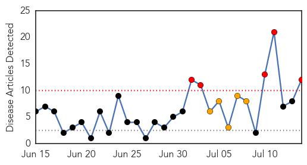

30 Day Trends
Web: 5 alerts, 5 warnings
Twitter: 4 alerts, 0 warnings
Top Articles:
- 0.976
- Health department initiates steps to prevent seasonal diseases
- 0.968
- Chikunguyna confirmed in Trinidad
- 0.955
- Test vaccine for dengue shows promise
- 0.885
- Govt sets two-month target to reduce dengue cases - Nation
- 0.862
- Putrajaya targets two months to reduce dengue fever cases – Bernama
- 0.857
- New Vaccine for Dengue Shows Promise
- 0.853
- One death, 22 dengue cases stirs BMC to start fogging
- 0.798
- Two-Month Dengue Target
- 0.787
- 'Two months to stem dengue rise' - Nation
- 0.754
- Cautious optimism greets results of Asian dengue vaccine trial
- 0.723
- Task force to combat dengue
- 0.520
- Vaccinate mosquitoes to stop malaria?
Top Tweets:
-
No tweets found for Jul 14, 2014
Web/News Articles
Tweets

Article Locations

Article Confidences